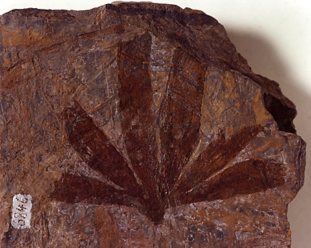
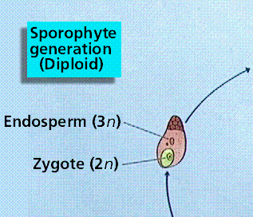
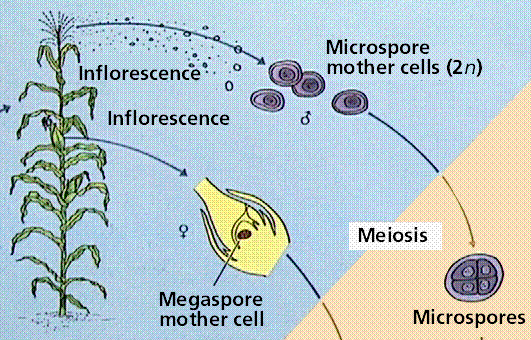
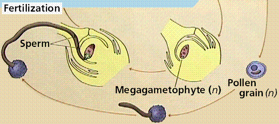
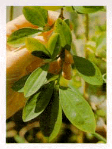
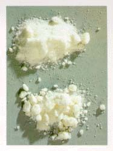
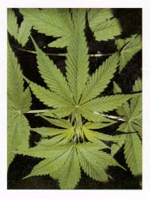
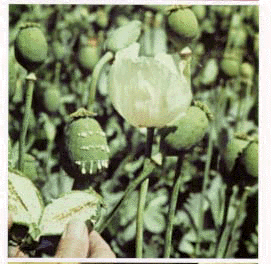

BIOLOGICAL DIVERSITY:
SEED PLANTS
Table of Contents
Gymnosperms are Seed
Plants | Cycads |
Ginkgos | Conifers
| Gnetales |
Angiosperms are
Flowering Plants | Flowers
| Trends in
Plant Evolution | Learning
Objectives | Terms |
Review Questions |
Links
Gymnosperms
are Seed Plants | Back
to Top
Gymnosperms
have seeds but not fruits or flowers. Gymnos
means naked, sperm means seed: thus the term gymnosperm =
naked seeds. Gymnosperms developed during the Paleozoic
Era
and became the dominant seed plant group during the early
Mesozoic
Era,
as shown in Figure 1. The ancestors of gymnosperms were some
now-extinct type of heterosporous fern or related group. There are
700 living species of gymnosperms placed into four divisions:
conifers (such as pines and spruce), cycads (such as the sago palm,
Cycas revoluta), ginkgos (the maidenhair tree, Ginkgo
biloba), and gnetophytes (such as Mormon tea,
Ephedra).
|
Figure 1. The
fossil records of some protist and plant groups. The width
of the shaded space is an indicator of the number of
species. Image from Purves et al., Life: The Science of
Biology, 4th Edition, by Sinauer Associates
(www.sinauer.com)
and WH Freeman (www.whfreeman.com),
used with permission.
|

|
Gymnosperms are undoubtedly the group from which
the angiosperms
developed, although, as Charles Darwin noted in Origin of
Species, which group "remains an abominable mystery". Numerous
gymnosperm groups have been proposed as flowering plant ancestors
over the past century.
Cycads
are placed in the Division Cycadophyta. They retain several fern-like
features, notably pinnate leaves and circinate vernation. However,
they usually produce cones
of nonphotosynthetic reproductive structures, a distinctively
unfernlike feature. Cycads, like all seed plants, are also
heterosporous, unlike the ferns which are all homosporous. Cycad
cones are unisexual, in fact the plants producing them are
dioecious,
having separate male and female plants. Cycads also produce
free-swimming sperm (a feature found only in ginkgoes among living
seed plant groups).
Cycads were much more prominent in the forests of
the Mesozoic than they are today. Presently, they are restricted to
the tropics. Zamia floridana is the only cycad occurring
natively in the continental United States. Several species of
Cycas, notably C. revoluta (shown in Figure 2), are
commonly encountered cultivated plants in warm, moist areas. Cycas
revoluta leaves are often used in Palm Sunday services in some
churches, both for their feathery appearance and ease of obtaining
from local greenhouses.
The ginkgoes
also were a much more prominent group in the past than they are
today. The sole survivor of this once robust and diverse group is
Ginkgo biloba, the maidenhair tree shown in Figure 3.
Extensively used as an ornamental plant, Ginkgo was thought
extinct in the wild until it was discovered growing natively in a
remote area of China. Ginkos are dioecious, with separate male and
female plants. The males are more commonly planted since the females
produce seeds that have a nasty odor. Pollination is by wind.
Recently, Ginkgo has become the current herbal rave, although
scientific studies have debunked the claim that the herbal supplement
made from ginkgoes improves memory. I think.
Precise systematic placement of the ginkgoes has
yet to bet determined. Ginkgoes have motile (swimming) sperm, a
rarity among living seed plants (only ginkgoes and cycads have this
feature today), although the vegetative anatomy of ginkgoes is more
conifer-like (long shoot and short shoot morphology discussed below;
structure of their wood). Ginkgoes, like the cycads, are dioecious,
and also have similar seed features to cycads.
Plants possibly allied to the modern
ginkgoes
have been found in Permian-aged and later rocks. These plants have
been classified in the leaf-genera Ginkgoites (shown in Figure
4) and Baiera, although recent studies suggest these genera
are really morphological variants and that the modern genus
Ginkgo should be used to include these fossils. During the
Mesozoic ginkgoes were worldwide in their distribution and important
elements in the gymnosperm forests that dominated the land.
|
Figure 4. Ginkgoites leaf from the
Triassic of North Korea.
Although this fossil is not the
typical fan shape of most modern ginkgo leaves, modern
ginkgoes do produce leaves of this general shape. Image from
http://www.dges.tohoku.ac.jp/museum/fosgal19.html.
|
|

|
The conifers
remain a major group of gymnosperms that include the pines, spruce,
fir, bald cypress and Norfolk Island Pine (Araucaria). The
division Pinophyta contains approximately 550 species of conifers.
The conifers are cone producing trees and shrubs that usually have
evergreen needle-like leaves. Needles have a thick cuticle, sunken
stomates, and a reduced surface area. The conifers, as a group, are
well adapted to withstand extremes in climate and occur in nearly all
habitats from the equator to the subpolar regions. The taiga biome
consists largely of various conifer species.
Auracarias
Members of this group of conifers have numerous
small, scale-like leaves spiraling around their stems.
Araucaria, a major genus that gives its name to the group, is
a common ornamental because of the symmetry and beauty of its growth
form. The monkey puzzle tree, shown in Figure 5, is a species of
Araucaria.
The fossil record of Auracarias and similar plants
is quite good. The fossil genus Auracarioxylon that grew in
Arizona during the Triassic Period comprises the largest group of
petrified wood in the Petrified Forest National Park of Arizona.
Taxodiaceae: Sequoias and more
Members of this group include some of the largest
trees, and have been significant members of the forests of the world
since the Mesozoic. Sequoia, shown in Figure 6, and
Sequoiadendron are major genera in this group.
The Pine Life Cycle
Pines have an interesting life cycle, shown in
Figure 7, that takes two years to complete. Not all seed plants have
such a long time span to complete their life history: some flowering
plants manage to do it in as little as a few weeks.
The sporophyte, as in all other vascular plant
groups, is the dominant, photosynthetic part of the life cycle: when
you are holding pine needles in your hand you are holding sporophyte
parts. Pines have specialized reproductive structures in which
meiosis occurs: pine cones. Pollen
grains are produced in the male cones, and
contain the male gametophyte (which consists of only a very few
cells). Pollen released from the male cones is
carried by wind to the female cones, where it lands. The cones close
and the next year the pollen grain germinates to produce a
pollen
tube that grows into the female
gametophyte. The sperm cell (from the pollen
grain) and egg cell fuse, forming the next generation
sporophyte. The sporophyte develops into an
embryo encased within a seed. The seed is later released to be
transported by the wind to where (hopefully) it lands and germinates.
If you have seen a large pine tree you realize there are hundreds or
more female cones on such a tree. Pine pollen has been noted to
travel great distances from the plant that produced it, if the wind
is strong enough. To aid this transport pine pollen has two air sacs,
and thus is quite distinctive, as shown in Figure 8.
|
Figure 7. The pine life cycle. Note: to
view these four segments in correct sequence you will need
to increase your browser window width as much as
possible. Images from Purves et al.,
Life: The Science of Biology, 4th Edition, by Sinauer
Associates (www.sinauer.com)
and WH Freeman (www.whfreeman.com),
used with permission.
|
|
|
The Gnetales,
shown in Figure 9, are an odd group: they have some angiosperm-like
features but are not themselves angiosperms. Cladistic analyses
support placement of the gnetales (or some portion of them) as
outgroups for the flowering plants. Three distinctive genera comprise
this group: Welwitschia, Gnetum, and Ephedra.
Ephedra occurs in the western United States where it has the
common name "Mormon tea". It is a natural source for the chemical
ephedrine, although there is no evidence the Mormons in Utah (where
the plant is extremely common) ever used it for tea.
Welwitschia is limited to coastal deserts in South Africa,
although fossil leaf, cuticle and pollen evidence indicates plants of
this type were widespread during the Mesozoic Era. Welwitschia
is noted for its two long, prominent leaves. Gnetum has leaves
that look remarkably like those in angiosperms, as well as vessels in
the xylem, generally considered an angiosperm characteristic.
Among the gnetalean plants, Ephedra is
perhaps the best known. One folkloric name for the plant is "Mormon
tea". This is a misnomer as there appears little or no evidence that
members of a religion that bans stimulants such as caffeine ever
brewed a tea from the plant. However, the plant does produce the drug
ephedrine, a stimulant lately linked to deaths of athletes.
Welwistchia is a very bizarre plant
natively growing only in the coastal deserts of South Africa. The
plant produces two long leaves and a crown of reproductive cones
rimming a brown, central body. Pollen resembling Welwitschia
has been found in many parts of the world, indicating a formerly more
widespread distribution of this enigmatic plant.
Angiosperms
are Flowering Plants | Back
to Top
Flowering plants, the angiosperms,
were the last of the seed plant groups to evolve, appearing during
the later part of the of the Age of Dinosaurs (the beginning of the
Cretaceous, 140 million years ago). All flowering plants produce
flowers.
Within the female parts of the flower angiosperms produce a diploid
zygote
and triploid endosperm.
Fertilization
is accomplished by a variety of pollinators, including wind, animals,
and water. Two sperm are released into the
female gametophyte: one fuses with the egg to produce the zygote, the
other helps form the nutritive tissue known as endosperm.
The angiosperms (angios = hidden) produce
modified leaves grouped into flowers that in turn develop fruits and
seeds. There are presently 235,000 known
living species. Most angiosperms also have larger xylem cells known
as vessels that improve the efficiency of their vascular systems.
Whence came the angiosperms? This was Darwin's
"abominable mystery". Clearly angiosperms are descended from some
group of Mesozoic-aged gymnosperm seed plant....but which one? Click
here
to view an online lab exercise in phylogeny and try to figure things
out!
The classical view of flowering plant evolution
suggests early angiosperms were evergreen trees that produced large
Magnolia-like flowers. Click here
to view an illustration of suggested paths of floral evolution.
However, this view has recently been contradicted by the oldest
fossil yet found, a 140 million year old plant found by David Dilcher
and his associates.
The angiosperms underwent an adaptive radiation
during the Cretaceous, and for the most part escaped the major
extinctions at the end of the Cretaceous.
Flowers are collections of reproductive and
sterile tissue arranged in a tight whorled array having very short
internodes.
Sterile parts of flowers are the sepals
and petals.
When these are similar in size and shape, they are termed tepals.
Reproductive parts of the flower are the stamen
(male, collectively termed the androecium)
and carpel
(often the carpel is referred to as the pistil,
the female parts collectively termed the gynoecium).
Lily flowers (shown in Figure 10) demonstrates these concepts.
Flowers may be complete,
where all parts of the flower are present and functional, or
incomplete,
where one or more parts of the flower are absent. Many angiosperms
produce a single flower on the tip of a shoot (like the lily pictured
in Figure 10, or tulips). Other plants produce a stalk bearing
numerous flowers, termed an inflorescence, such as is seen in many
orchids. Many flowers show adaptations for insect pollination,
bearing numerous white or yellow petals. Others, like the grasses,
oaks, and elms, are wind pollinated and have their petals reduced and
often inconspicuous.
Angiosperm Life Cycle
Flowering plants also exhibit the typical plant
alternation of generations, shown in Figure 11. The dominant phase is
the sporophyte, with the gametophyte being much reduced in size and
wholly dependant on the sporophyte for nutrition. The is not a unique
angiosperm condition, but occurs in all seed plants as well. What
makes the angiosperms unique is their flowers and the "double
fertilization" that occurs. Technically this is not double
fertilization, but rather a single egg-sperm fusion (fertilization
proper) plus a fusion of the second of two sperm cells with two
haploid cells in the female gametophyte to p[produce triploid
(3n) endosperm, a nutritive tissue for the developing embryo. More
details on this aspect of the flowering plants are available in the
FLOWERING
PLANT REPRODUCTION: Fertilization and
Fruits chapter.
|
Figure 11. Life cycle of corn, a typical
monocot angiosperm. Note the formation of endosperm by
"double fertilization". Images from
Purves et al., Life: The Science of Biology, 4th
Edition, by Sinauer Associates (www.sinauer.com)
and WH Freeman (www.whfreeman.com),
used with permission.
|
|


|
Angiosperm
Systematics | Back to
Top
The flowering plants, the division Magnoliophyta,
contain more than 235,000 species, six times the number of species of
all other plants combined. The flowering plants divide into two large
groups, informally named the monocots and the dicots. The techjnical
names for these groups are the class Magnoliopsida for dicots and the
class Liliopsida for monocots.
The dicotyledons are in the class Magnoliopsida
and have these features: either woody or herbaceous, flower parts
usually in fours and fives, leaves usually net-veined, vascular
bundles arranged in a circle within the stem, and produce two
cotyledons (seed leaves) at germination. Prominent dicot families
include the mustards, maples, cacti, peas and roses. Several dicot
families are noteworthy because of the illegal drugs (shown in Figure
12) derived from them: the Cannabinaceae (marijuana) and Papaveraceae
(poppies from which opium and heroin are derived). Erythroxylum
coca (in the dicot family Erythroxylaceae) is the plant from
which the illegal drug cocaine is extracted.
Figure 12. Some dicot
plants bused for making illegal drugs. Top: Erythroxylum
coca, left image, the plant that is the source of
cocaine, from http://www.drugs.indiana.edu/graphics/photographs/cocaine1.gif,
right image, cocaine, from http://www.drugs.indiana.edu/graphics/photographs/cocaine3.gif;
Bottom left, Cannabis sativa, the marijuana plant;
image from http://www.drugs.indiana.edu/graphics/photographs/marij6.gif,
right: Papaver somniferum, the opium poppy being
harvested; image from http://www.drugs.indiana.edu/graphics/photographs/opium7.gif.
|
|

|
|

|
Not all dicot plants are misused to produce
illegal drugs. Notable dicot families with legitimate uses include
the pea family, which includes the crop plants beans, clover, and
peas as well as many ornamental landscape plants such as Acacias.
Beans are an excellent source of nonanimal protein as well as fiber.
Another dicot of enormous use is cotton, Gossypium, shown in
Figure 13. Chocolate and cola are products of the plant family
Sterculiaceae. Coffee is produced from Coffea arabica, a plant
in the family Rubiaceae, while tea comes from Camelia sinensis
(Theaceae), a plant native to China.
The class Liliopsida has plants that are
herbaceous (a majority are, only palms and bamboo stand out as
monocot trees), flower parts are in threes, leaves are usually
parallel-veined, vascular bundles are scattered within the stem, and
produce one cotyledon (seed leaf) at germination. Monocot families
include lilies, palms, orchids, irises, and grasses.
The monocot family Poaceae (known previously as
the Gramineae) includes the grasses such as corn, oats, wheat, rye,
and rice that are staple food products as well as ornamental plants
such as crabgrass and tiff grass. The importance of this plant family
to modern civilization cannot be overstated, as the first six plants
mentioned in the previous sentence provide 75% of our food, either
directly as food we eat or indirectly as food for animals we eat.
Trends in
Plant Evolution | Back
to Top
Several evolutionary trends within the plant
kingdom have been noted. The monophyletic nateure of this kingdom is
not in dispute, with the first major division being between vascular
and nonvascular plants. Wihin the vascular plants we see increasing
changes in the relationship between sporophyte and gametophyte,
culminating in flowering plants.
Developing from green algal ancestors, plants show
a trend for reduction of the complexity, size, and dominance of the
gametophyte generation. In nonvascular plants the gametophyte is the
conspicuous, photosynthetic, free-living phase of the life cycle.
Conversely, the angiosperm gametophyte is reduced to between three
and eight cells (hence it is very inconspicuous) and is dependent on
the free-living, photosynthetic sporophyte for its nutrition.
Plants also developed and refined the
root-shoot-leaf axis with its specialized conducting cells of the
xylem and phloem. The earliest vascular
plants, such as Cooksonia and Rhynia, were little more
than naked (unleafed) photosynthetic stems. Some plants later
developed secondary growth that produced wood. Numerous leaf
modifications are known, including "carnivorous" plants such as the
Venus flytrap, as well as plants that have reduced or lost leaves,
such as Psilotum and the cacti.
A third trend is the development of the seed to
promote the dormancy of the embryo. The seed allows the plant to wait
out harsh environmental conditions. With the development of the seed
during the Paleozoic era plants became less prone to mass
extinctions.
The fourth trend in plant evolution is the
encasing of a seed within a fruit. The only plant group that produces
true fruit is the flowering plants, the angiosperms. Fruits serve to
protect the seed, as well as aid in seed dispersal.
Table 1. Plant classification.
|
Division
|
Characteristics
|
Examples and Uses
|
|
Bryophyta
|
nonvascular plants, gametophyte dominanted life cycle
|
mosses, liverworts,
hornworts
|
|
Psilophyta
|
naked photosynthetic stems, no leaves, free-sporing
|
Psilotum nudum, Tmesipteris;no commercial
uses
|
|
Lycophyta (the club mosses)
|
microphyll leaves, sporangia in strobili; more
significant in the Paleozoic
|
Lycopodium, a homosporous plant,
Selaginella, a heterosporous plant; no commercial
uses except as ground cover in some areas
|
|
Sphenophyta (= Equisetophyta; the horsetails)
|
megaphyll leaves, sporangia in tight cones; plants with
jointed stems; more significant in the Paleozoic
|
Equisetum, the scouring rush or horsetail; no
commercial applications
|
|
Filicophyta (ferns)
|
megaphyll pinnately compound leaves, sporangia on
underside of leaves, clumped in sori; leaves arise by
circinnate vernation (uncoiling to look initially like a
crozier or sheperd's crook)
|
Ornamental plants such as the Boston fern; tree ferns;
commercial applications as ornamentals; ecologically
important plants in some areas of the world
|
|
Cycadophyta (the cycads)
|
long, pinnately compound megaphyll leaves with a leathery
feel arising from soft woode4d stems by circinnate
vernation; new leaves arise as a crown or whorl;
reproduction by seeds produced in female cones, pollen
produced in male cones
|
Cycas revoluta, a common ornamental known as the
Sago palm;Zamia floridana, only cycad native to the
48 contiguous United States; commercial uses as ornamental
plants
|
|
Ginkgophyta (the ginkoes)
|
fan shaped, usually bilobed leaves on a woody tree with
long anmd short shoot anatomy; seeds produce a foul odor
when mature; pollen elliptical, monoaperturate
|
Ginkgo biloba, the maidenhair tree; commercial
uses as ornamental plants and allegedly as a memory aid in
herbal form
|
|
Coniferophyta
|
needle-like or scale-like leaves with thick cuticles and
sunken stomata; soft wooded plants; seeds lacking fruit,
dispersede from hardened cones; pollen can be bisaccate
(Pinus) or lacking sacs (Taxodium)
|
Pinus(wood, resin, pine straw, pine nuts, paper);
Taxus (yew) a natural source for the anticancer drug
taxol; Douglas fir (wood); ornamental plants
|
|
Gnetophyta
|
living plant group most closely related to flowering
plants; vessels in some members of group; reproductive
structures close to flowers; pollen elliptical eith usually
one aperture
|
Ephedra (Mormon tea) source of ephedrine;
Gnetum; Welwitschia have no commercial
uses
|
|
Magnoliophyta
|
flowering plants (angiosperms) that encase their seeds
within a ripened ovary wall known as a fruit; fruits may be
dry or fleshy, single or multiple; two major classes the
monocots and dicots; xylem may include vessels as well as
tracheids; range from herbaceous annuals to periennel
trees
|
Monocots: cereal grains form staple of economy and diet;
palms are used in many places as building material;
ecologicalimpact as pioneer species in disturbed
habitats;
Dicots: food crops such as beans, peas; fibers from
cotton used to make clothing and paper; illegal drugs such
as marijuana, cocaine, heroin; legal products such as
chocolate, tea, and coffee; Nicotiana leaves make
tobacco a dangerous legal "drug"; ornamental plants
|
- Be able to compare and contrast the characteristics of seed,
nonseed, and nonvascular plants. To do this complete the table
below.
|
Characteristic
|
Nonvascular Plants
|
Nonseed Plants
|
Seed Plants
|
|
Dominant Phase of Plant Life Cycle
|
|
|
|
|
Swimming Sperm
|
|
|
|
|
Pollen Tube
|
|
|
|
|
Pollen or Spores
|
|
|
|
|
Homospory or Heterospory or Mixed
|
|
|
|
|
Examples of Plants in this Group
|
|
|
|
- Be able to list the uses of some common gymnosperm plants,
such as pines and ginkgoes.
- Be able to list some of the uses of flowering plants.
- It has been stated that the ancestor of flowering plants most
likely was a gnetalean plant (or at least a plant closely related
to them). What evidence supports this?
- How might the fact that a species in monoecious or dioecious
affect your decision to use it as a crop plant? As a landscape
plant?
- Endosperm tissue is unique to which of these
groups? a) cycads; b) conifers; c) flowering plants; d)
ferns
- Seed plants have ___. a) pollen grains with
male gametophytes developing on the inside; b) female gametophytes
developing inside an ovule retained on the sporophyte; c) roots;
d) all of these
- Which of these plants is not a gymnopserm? a)
corn; b) pine; c) redwood; d) ginkgo
- Which of these plants is not a flowering
plant? a) corn; b) wheat; c) lily; d) douglass fir
- Cycads and ginkgoes were important plants to
the world's terrestrial ecosystems during the ____. a) Paleozoic
era; b) Cenozoic era; c) Mesozoic era; d) precambrian
- The presence of long shoot/short shoot
anaytomy characterizes which of these pants? a) Ginkgo; b)
Cycas; d) Zamia; d) ferns
Answers: 1. c; 2. d; 3. a; 4. d; 5. c; 6. a;
- Non-Flowering
Plant Family Access Page Sorted by family on the non-flowering
plants. Thumbnail photos are linked to larger versions. This site
is a great educational resource maintained by Gerald D. Carr.
- Encyclopedia of Plants
Scientific and common names for garden plants.
- The Botanical Society of
America The official website of the plant folks.
- Cycad
Pages This Australian website is a great stepping stone for
more information about a favorite plant group of mine: cycads.
This page is maintained by Ken Hill of the Royal Botanic Gardens
Sydney and Dennis Stephenson of the New York Botanical
Garden.
- Ginkgo
biloba History, uses, and other information about this
living "fossil tree" whose leaves are essentially unchanged since
the Tertiary period.
- The Ginkgo Pages
Cor Kwant has produced a great resource on a fascinating plant. A
great resource for images and information!
- Gymnosperm
Database Christopher J. Earle has developed a nifty resource
for digging deeper into the gymnosperms. A series of links from
this page take you into images and descriptions of the various
gymnosperm groups.
- Erythroxylum:
The Coca Plant This ethnobotanical page, by April Rottman,
describes the systematics and uses of the plant as well as its
product, cocaine.
- Barley:
The Versatile Crop This page, part of a series of ethnobotanical
leaflets, is by Bryan Young, and describes the natural history
and economic uses of barley, the 4th most important crop.
All text contents ©1995, 1999, 2000, 2001, 2003, 2004, by
M.J. Farabee. Use of text for educational purposes is encouraged.
Back to Table of Contents
Email: mj.farabee@emcmail.maricopa.edu
Last modified:
The URL of this page is:

{kind=link}
{kind=link}
{kind=link}
{kind=link}
{kind=link}
{kind=link}
{kind=link}
{kind=link}
{kind=link}
{kind=link}
{kind=link}
{kind=link}
{kind=link}
{kind=link}